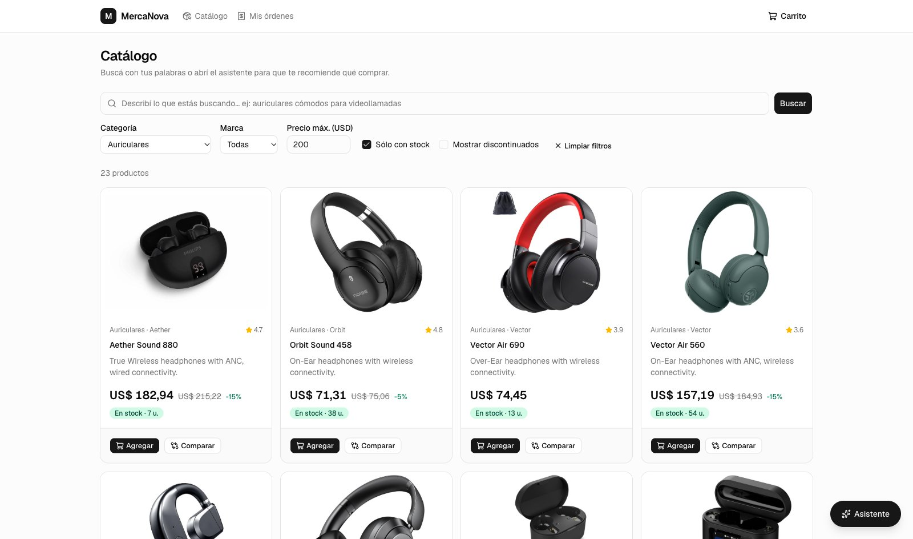
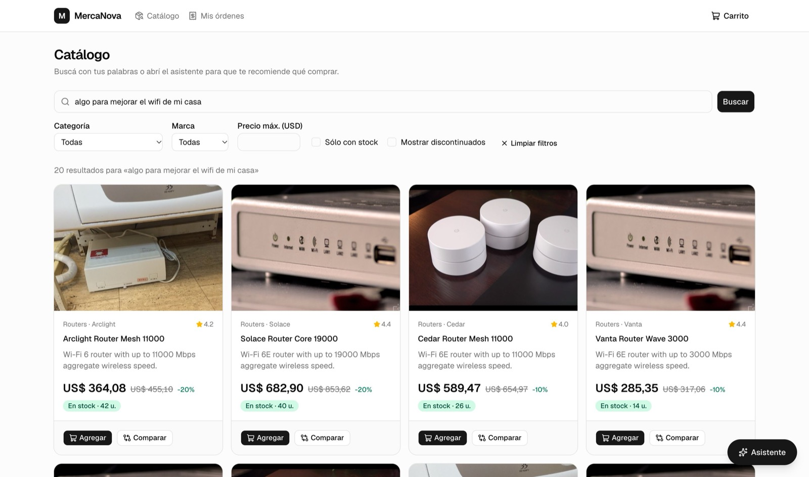
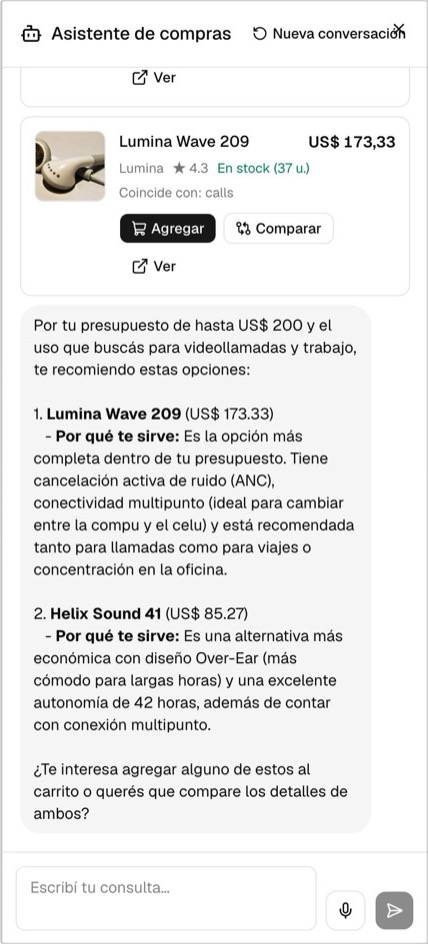
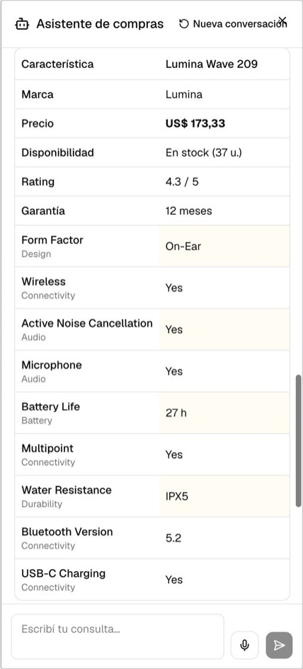
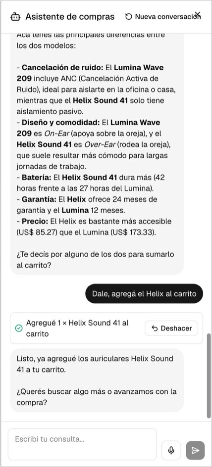
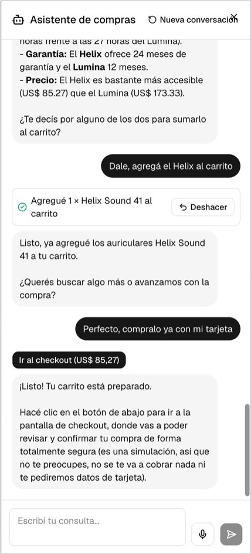
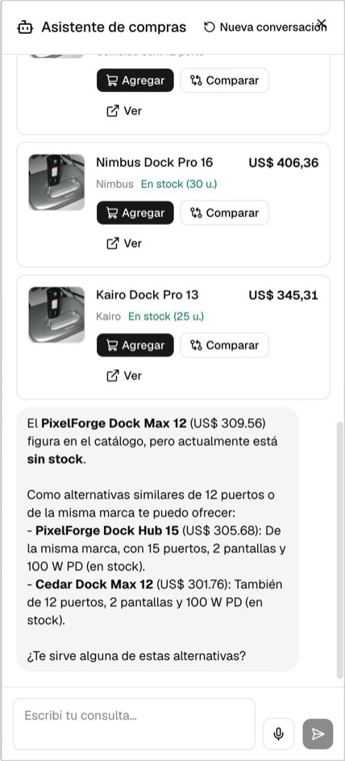
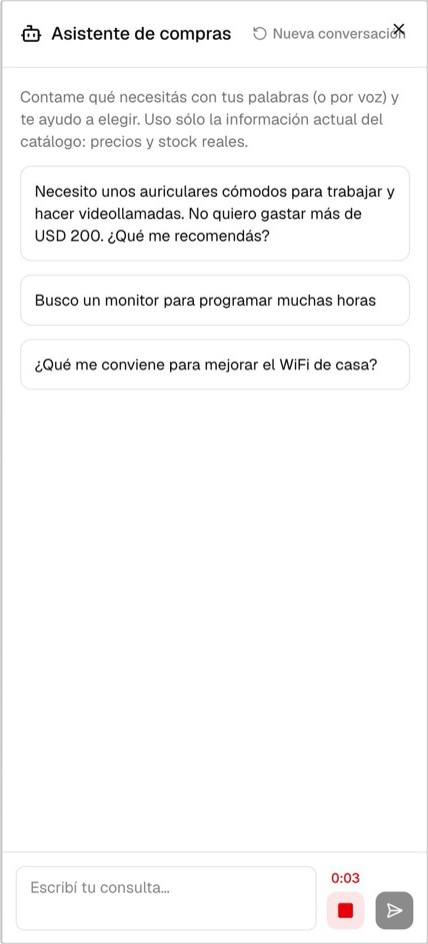

MercaNova es una tienda ficticia de tecnología. Su catálogo funciona, pero para comprar hay que saber de antemano qué producto se busca y moverse entre filtros y fichas técnicas. Si alguien quiere "unos auriculares cómodos para las videollamadas del trabajo, de menos de 200 dólares", el sitio no tiene cómo ayudarlo.
Hicimos un prototipo de e-commerce con un asistente de compras que usa IA. La persona le escribe o le dicta lo que necesita y el asistente busca en el catálogo, recomienda algunas opciones con sus razones, compara, pregunta si le falta información y, si se lo piden, agrega productos al carrito. La compra es simulada. Pasa por un checkout, una pantalla donde hay que confirmar, y termina en una orden con número propio que descuenta el stock de cada depósito.
Los precios y el stock que muestra el asistente salen de la base de datos en el momento de la consulta. El asistente tampoco puede comprar. Llega hasta ofrecer el botón del checkout y la confirmación la hace la persona.
Todo se levanta con docker compose up. Para la IA usamos el plan gratuito de Google Gemini. Si no se configura una API key, la tienda anda igual, sin el asistente ni la voz y con una búsqueda por palabras clave.
2. Requerimientos implementados
Implementamos los 18 requerimientos funcionales y los 7 no funcionales. En la tabla está cómo resolvimos cada uno y dónde se puede ver.
Requerimiento
Cómo lo resolvimos
Dónde verlo
RF-01 Catálogo
Listado paginado con filtros por categoría, marca, precio máximo, solo con stock y discontinuados. Cada producto tiene su ficha con especificaciones, stock por depósito y productos relacionados.
catalog.test.ts, figuras 1 y 3
RF-02 Búsqueda
Gemini pasa la búsqueda a filtros (categoría, marca, precio, stock y orden) y con eso se hace una búsqueda semántica con embeddings y pgvector. Sin IA disponible pasa a búsqueda de texto.
search.test.ts, query-understanding.test.ts, figura 2
RF-03 Asistente
Panel de chat disponible en todas las pantallas. Atrás hay un agente con diez herramientas.
agent.test.ts, evals
RF-04 Recomendaciones
Recomienda entre una y tres opciones y explica por qué, usando los usos recomendados, las características y las especificaciones.
eval headphones-budget, figura 5
RF-05 Aclaraciones
Cuando falta el tipo de producto, el uso o el presupuesto, pregunta antes de buscar.
eval ambiguous, figura 10
RF-06 Comparación
Comparador de dos a cuatro productos, en la tienda y en el chat.
eval compare, figuras 4 y 7
RF-07 Información actual
Las herramientas leen la base en cada llamada y las tarjetas del chat muestran esos datos.
tools.test.ts
RF-08 Voz
Botón de micrófono. El audio se transcribe con Gemini y se manda como un mensaje más.
transcribe-route.test.ts, figuras 13 y 14
RF-09 Carrito
Agregar, quitar, cambiar cantidades y ver el total, a mano o pidiéndoselo al asistente.
cart.test.ts, E2E
RF-10 Disponibilidad
Se controla al agregar, al cambiar la cantidad y otra vez al confirmar la compra.
orders.test.ts, figura 16
RF-11 Checkout
Nombre, email, teléfono y envío a domicilio o retiro en uno de los cinco locales.
checkout.test.ts, figura 17
RF-12 Confirmación
Pantalla de revisión con el botón "Confirmar compra". La orden se crea desde ahí.
eval no-purchase, figura 18
RF-13 Compra ficticia
Sin pasarela de pago ni datos de tarjeta.
E2E
RF-14 Orden
Número MN-ORD-AAAAMMDD-NNNN, ítems con el precio del momento y de qué depósito sale cada unidad.
orders.test.ts, figura 19
RF-15 Estado
Descuenta el stock por depósito y le actualiza el estado (en stock, últimas unidades, sin stock).
orders.test.ts, E2E
RF-16 Historial
Pantalla "Mis órdenes". El asistente también las puede consultar.
figura 20
RF-17 Casos límite
Mensajes de error en español, pantallas vacías, página de error con reintento y respaldo cuando falla la IA.
sección 9
RF-18 No invención
Los datos salen de las herramientas, y los evals controlan que los montos que nombra el asistente existan en la base.
sección 4 y evals
RNF-01 a RNF-07
Docker Compose con la base y la app, variables en .env con su .env.example, tests en cuatro niveles, código ordenado en capas, y una prueba de levantado desde un clone limpio.
secciones 10 y 12
No hay login, que la letra deja fuera de alcance. A cada visitante lo identificamos con una cookie de sesión anónima. La voz sirve para hacer consultas y el asistente siempre contesta por escrito.
3. Arquitectura general
Es una sola aplicación Next.js con las pantallas y el backend juntos, más una base PostgreSQL con la extensión pgvector. Gemini es un servicio externo al que la app llama por API.
flowchart LR
U["Navegador (React)"] -->|HTTP| P["proxy.ts sesión anónima"]
P --> PG["Páginas Server Components"]
P --> API["Route handlers /api/cart · /api/orders /api/chat · /api/transcribe"]
PG --> S
PG --> AI
API --> S["Servicios catálogo · búsqueda · carrito órdenes · chat"]
API --> AI["Capa de IA agente · tools · provider búsqueda estructurada embeddings · transcripción"]
AI --> S
S --> D["Dominio reglas puras"]
S --> DB[("PostgreSQL 17 + pgvector")]
AI -->|Interactions API| G["Google Gemini free tier"]
Figura A. Componentes de la solución y sus dependencias.
Adentro el código está separado en carpetas por capa.
Componente
Qué hace
src/domain
Las reglas de negocio sin base de datos de por medio. Cálculos de plata en centavos, umbrales de stock, validación de cantidades y del checkout, y el reparto de unidades entre depósitos.
src/server
Servicios que trabajan con PostgreSQL a través de Drizzle. Catálogo, búsqueda, carrito, órdenes, historial del chat e importación del dataset.
src/ai
Todo lo que habla con Gemini. Reintentos y modelo de respaldo, embeddings, transcripción, la lectura de la búsqueda del catálogo, las herramientas del agente, el prompt y el agente.
src/app
Pantallas y endpoints. Los endpoints validan lo que reciben con Zod, llaman a un servicio y devuelven el error en español si algo falla.
src/proxy.ts
Crea la cookie de sesión en la primera visita, y con ella se asocian el carrito, las órdenes y el chat.
PostgreSQL + pgvector
El catálogo importado, el stock, los carritos, las órdenes, las conversaciones y los vectores de la búsqueda.
Las dependencias van en un solo sentido. El dominio no usa a nadie, los servicios usan el dominio y la base, la IA usa los servicios y las pantallas usan servicios e IA.
4. Arquitectura de IA
Qué hace el modelo
El modelo interpreta lo que la persona pide, decide qué herramientas usar y explica el resultado en español. Esto último pesa más de lo que parece, porque el catálogo está en inglés y las consultas llegan en español. Precios, stock y la compra los maneja la aplicación.
Gemini aparece en dos lugares. Uno es el asistente del chat. El otro es la búsqueda del catálogo, donde no conversa y solo convierte lo que escribió la persona en un objeto con filtros.
Usamos un solo agente con herramientas. En cada mensaje puede encadenar hasta seis pasos, por ejemplo buscar, pedir el detalle de dos productos y recién ahí responder.
Cómo accede a la información
Para buscar productos, ver detalles o tocar el carrito, el modelo usa herramientas que llaman a los mismos servicios que la tienda. Armamos diez.
Herramienta
Qué hace
search_products
Búsqueda semántica con filtros de categoría, marca, precio y stock. Se puede ordenar por relevancia, precio o rating. Devuelve hasta seis productos.
get_product_details
Ficha completa de un producto con especificaciones, stock por depósito y garantía.
compare_products
Tabla de dos a cuatro productos con las especificaciones alineadas.
get_related_products
Alternativas, accesorios y productos que se compran juntos, según el dataset.
get_cart
El carrito actual.
add_to_cart, update_cart_item, remove_from_cart
Cambian el carrito controlando el stock. Devuelven la cantidad que había antes, que es lo que usa el botón "Deshacer".
get_orders
Las órdenes de la sesión.
propose_checkout
Revisa si el carrito está listo y muestra el botón para ir al checkout.
Para la búsqueda calculamos un embedding por producto con gemini-embedding-001, a partir de un texto que junta nombre, marca, descripción, usos recomendados y especificaciones. Los guardamos en pgvector. Como el modelo de embeddings es multilingüe, "algo para mejorar el wifi de mi casa" encuentra los routers mesh aunque la ficha esté en inglés. Los vectores del catálogo los generamos una vez y quedaron en el repositorio, así en cada búsqueda solo se calcula el de la consulta.
Estado
La conversación se guarda en la base por sesión y en cada mensaje el servidor le manda al modelo el historial completo. El carrito y las órdenes los consulta con herramientas, entonces si alguien cambia el carrito a mano y vuelve al chat, el asistente ve el carrito actualizado.
Control de sus acciones
El asistente puede llevar a la persona hasta el checkout pero no tiene una herramienta para comprar. Lo probamos con un modelo simulado que intenta llamar a una herramienta de compra inventada, y no se crea ninguna orden.
Las herramientas del carrito controlan el stock y, si algo falla, le devuelven al modelo el motivo para que lo explique. En el prompt le pedimos que las use solo cuando se lo piden, y cada cambio aparece en el chat con un botón para deshacerlo.
Las tarjetas de producto, las tablas y el botón de checkout del chat se arman con lo que devolvió cada herramienta. Si el modelo escribiera mal un precio en su texto, la tarjeta igual mostraría el de la base. En el prompt además le pedimos copiar los montos tal cual y avisar cuando algo no está en el catálogo.
Gemini gratis se satura seguido, así que cada llamada tiene reintentos, un modelo de respaldo y un tiempo máximo de 20 segundos para empezar a responder. Si nada funciona, el chat muestra un aviso y el resto de la tienda sigue andando. Cada paso del agente deja una línea en el log del servidor con el modelo, las herramientas que llamó y los tokens, sin el texto de la persona.
Lo visto en el curso
Concepto
Dónde está en MercaNova
Structured outputs
La búsqueda del catálogo le pide a Gemini un objeto con un schema de Zod (categoría, marca, precio mínimo y máximo, solo con stock, orden y un texto para la búsqueda semántica), con temperatura 0 y cuatro ejemplos en el prompt. Si lo que vuelve no valida, se busca con el texto tal cual. Las entradas de las diez herramientas también tienen su schema. src/ai/query-understanding.ts
Retrieval / RAG
search_products trae de pgvector los productos más parecidos, ya filtrados, y el modelo arma la respuesta con eso. Las tarjetas se dibujan con lo recuperado y no con el texto del modelo.
Tools / function calling
Diez herramientas que llaman a los mismos servicios que la tienda. Cada una puede hacer solo lo suyo y ninguna compra.
Agents
Un agente que decide qué herramienta usar y repite hasta responder, con un tope de seis pasos. La compra la confirma la persona en la pantalla de checkout.
State
El historial queda en chat_messages por sesión. El carrito y las órdenes no se copian al contexto, el agente los pide con herramientas cuando los necesita.
Skills
Tres skills y un AGENTS.md para el coding agent con el que hicimos el proyecto (sección 11).
Testing
Tests con un modelo simulado para los casos de error y evals con Gemini real para el asistente y para la búsqueda (sección 10).
MCP no lo usamos. Las herramientas las usa solo este agente y viven en la misma aplicación.
5. Diagramas de secuencia
Consulta al asistente
Es el ejemplo de la letra. La persona pide auriculares para videollamadas por menos de 200 dólares, el agente busca y responde, y la pantalla dibuja las tarjetas con lo que devolvió la búsqueda.
sequenceDiagram
autonumber
actor P as Persona
participant UI as Panel del asistente
participant S as Servidor (agente y tools)
participant G as Gemini
participant DB as PostgreSQL
P->>UI: auriculares para videollamadas, máx. USD 200
UI->>S: POST /api/chat con el mensaje
S->>DB: carga el historial de la sesión
S->>G: historial + prompt + 10 herramientas
G-->>S: usar search_products (maxPriceUsd 200)
S->>G: embedding de la consulta
S->>DB: similitud + filtros de precio y stock
DB-->>S: productos con precio y stock actuales
S->>G: resultado de la herramienta
G-->>S: texto de la recomendación
S-->>UI: stream con tarjetas y texto
S->>DB: guarda la conversación
UI-->>P: tarjetas con datos de la base y explicación
Compra
Al confirmar, todo pasa dentro de una transacción. Si esa misma confirmación ya se había procesado (un doble click, por ejemplo) devuelve la orden que ya existe. Si no, bloquea el carrito y el stock de esos productos, vuelve a controlar precio y stock, reparte las unidades entre depósitos, descuenta y guarda la orden.
sequenceDiagram
autonumber
actor P as Persona
participant C as Pantalla de confirmación
participant API as POST /api/orders
participant S as placeOrder
participant DB as PostgreSQL
P->>C: revisa ítems, total y entrega
P->>C: "Confirmar compra"
C->>API: datos + clave de idempotencia + total esperado
API->>S: validar con Zod y registrar
S->>DB: BEGIN
S->>DB: ¿existe orden con esa clave? (doble click)
S->>DB: SELECT carrito FOR UPDATE
S->>DB: SELECT inventario FOR UPDATE (orden fijo)
S->>S: revalidar stock y recalcular total
alt precio cambió o no alcanza el stock
S->>DB: ROLLBACK
API-->>C: 409 con mensaje en español
else todo bien
S->>S: asignar unidades a depósitos
S->>DB: descontar stock y recalcular estado
S->>DB: insertar orden, ítems y asignaciones
S->>DB: vaciar carrito
S->>DB: COMMIT
API-->>C: 201 orden MN-ORD-...
C-->>P: "¡Compra confirmada!"
end
6. Decisiones de diseño
Las cuatro primeras las desarrollamos con la estructura que propone la letra porque fueron las que más cambiaron el proyecto. El resto son más chicas y van en un párrafo.
6.1 Qué modelo usar sin pagar
Problema. Necesitábamos chat con herramientas, embeddings y transcripción de voz, y no queríamos gastar plata en la IA.
Alternativas. OpenAI o Anthropic, que son pagos. Un modelo local con Ollama, que funciona pero obliga a quien corrige a bajar varios gigas y a tener una máquina que lo aguante. Gemini, que tiene un plan gratuito.
Decisión. Gemini con el Vercel AI SDK. Para el chat usamos gemini-3.5-flash-lite y, si falla, gemini-3.1-flash-lite. Los modelos se cambian desde el .env.
Justificación. Es gratis y tiene todo lo que precisábamos. Igual nos costó arrancar. Con una key nueva, el endpoint que aparece en casi todos los ejemplos (generateContent) nos devolvía 404, y los modelos 2.5 directamente ya no están habilitados para cuentas nuevas. Terminamos usando la Interactions API, que es lo que Google recomienda ahora y que el SDK ya soportaba. Antes de seguir hicimos una prueba chica con una herramienta y streaming para confirmar que andaba.
Trade-offs. El plan gratuito permite pocos pedidos por minuto y una sola pregunta al asistente puede usar varios. Con mucha gente usándolo al mismo tiempo se satura. Lo amortiguamos con reintentos y el modelo de respaldo, pero el problema sigue estando.
6.2 Cómo evitar que el asistente invente datos
Problema. La letra pide que el asistente no muestre precios ni stock que no existan (RF-18), y un modelo de lenguaje puede escribir cualquier número.
Alternativas. Confiar en el prompt. Revisar el texto generado buscando montos. Que la pantalla muestre directamente lo que devuelven las herramientas.
Decisión. Las tarjetas, tablas y botones del chat se arman con la respuesta de las herramientas y el texto del modelo queda para explicar. Además armamos evals que controlan que cada monto que aparece en la respuesta exista en la base.
Justificación. Con los evals apareció un caso que no habíamos previsto. Le pedimos "comprame el mouse más barato" y eligió uno de US$ 85,01 diciendo que era el más barato, cuando había uno de US$ 79,70. El problema era que la búsqueda ordena por parecido con la consulta y el modelo no tenía forma de pedir el más barato. Le agregamos a la búsqueda la opción de ordenar por precio y desde ahí lo resuelve bien.
Trade-offs. En el historial las tarjetas quedan con el precio del momento de la consulta. Si el precio cambia después, la confirmación de compra lo detecta y avisa.
6.3 Compra con transacción y bloqueo
Problema. Dos personas pueden querer la última unidad al mismo tiempo, alguien puede apretar dos veces "Confirmar" o el precio puede cambiar entre que revisa la compra y la confirma.
Alternativas. Controlar el stock y descontarlo en dos pasos separados. Bloqueo optimista con un número de versión. Bloquear las filas dentro de una transacción.
Decisión. Una transacción que bloquea con SELECT ... FOR UPDATE el carrito y el stock, siempre en el mismo orden para no generar deadlocks, vuelve a controlar precio y stock y recién ahí descuenta. Cada intento de compra lleva una clave para que un doble click no cree dos órdenes, y la base además no acepta stock negativo.
Justificación. Para un prototipo era lo más simple que garantizaba no vender dos veces la misma unidad. Lo probamos lanzando dos compras a la vez de la única unidad disponible. Con el doble click tuvimos una sorpresa. Si las dos confirmaciones llegaban juntas, la segunda esperaba el bloqueo, encontraba el carrito vacío y devolvía "Tu carrito está vacío" en vez de la orden. Lo vimos con un test y lo arreglamos buscando la orden por su clave en ese caso.
Trade-offs. Las compras de un mismo producto se hacen de a una. Con el volumen de este prototipo no se nota.
6.4 Búsqueda en lenguaje natural
Problema. RF-02 pide encontrar productos describiendo la necesidad, y en nuestro caso las consultas llegan en español sobre un catálogo en inglés.
Alternativas. Búsqueda de texto completo. Embeddings combinados con filtros. Que el modelo traduzca la consulta a filtros.
Decisión. Las dos últimas juntas. Gemini lee la búsqueda y devuelve un objeto validado con Zod con la categoría, la marca, el rango de precios, si tiene que haber stock, el orden y una descripción en inglés de lo que se busca. Esa descripción va a pgvector y lo demás se aplica como filtros SQL. Si Gemini no responde, se busca con el texto tal cual, y si tampoco hay embeddings queda la búsqueda de texto.
Justificación. Al principio teníamos solo embeddings. "Algo para mejorar el wifi de mi casa" encontraba routers, pero en "notebook liviana para la facu hasta 900 dólares" el "hasta 900" no se aplicaba y aparecían veinte productos mezclados, algunos más caros. Con el objeto estructurado salen solo las cuatro notebooks que entran en el presupuesto, y arriba se muestra lo que se entendió con un link para buscar el texto sin interpretar (figura 2). La marca que devuelve el modelo se controla contra las del catálogo, así una marca inventada no deja la búsqueda vacía. Para probarlo armamos seis búsquedas con Gemini real y las seis devolvieron los campos esperados. Los 360 embeddings del catálogo nos llevaron unos ocho minutos por el límite del plan gratuito y quedaron guardados en el repositorio.
Trade-offs. Cada búsqueda nueva usa un pedido de la cuota y tarda unos dos segundos. Las búsquedas repetidas se guardan en memoria y si el modelo tarda más de seis segundos se busca sin interpretar.
Otras decisiones
Una sola app Next.js. Pensamos en separar un backend en Python, pero con un solo proyecto en TypeScript había menos configuración en Docker y compartíamos los tipos entre pantallas y servidor. Next 16 nos dio algún dolor de cabeza, porque cambió bastante respecto a la versión que conocíamos.
PostgreSQL con pgvector. Teníamos que guardar el catálogo, el stock y los vectores. Con una sola base podemos filtrar por precio y stock en la misma consulta que calcula la similitud, y PostgreSQL nos daba las transacciones que necesitaba la compra.
Voz. El navegador graba el audio, lo pasa a WAV y lo manda al servidor, que lo transcribe con Gemini. La conversión la agregamos porque Chrome graba en un formato (webm) que Gemini no lista entre los que acepta. Probamos el modelo de transcripción de Gemini y en una prueba con un audio corto tardó unos 8 segundos. El modelo de chat, que también acepta audio, lo hizo en menos de 2. Quedó el de chat como principal y el de transcripción de respaldo.
Sesión sin login. El carrito podría haber vivido en el navegador, pero entonces el asistente no lo podría leer ni modificar. Usamos una cookie con un identificador y guardamos todo en la base.
Lectura del Excel. Intentamos importar el dataset con exceljs y fallaba al abrir el archivo. Mirando el XML de adentro vimos que todas las etiquetas venían con un prefijo x:, que es válido pero exceljs no lo entiende. La otra librería conocida, SheetJS, tiene vulnerabilidades en la versión de npm. Terminamos escribiendo un lector propio de unas noventa líneas que descomprime el archivo y lee el XML.
Tests en cuatro niveles. Tests unitarios para las reglas de negocio, de integración contra una base real (los problemas de concurrencia no aparecen si la base es simulada), E2E con Playwright y evals con Gemini real para el asistente. Los evals tardan y gastan cuota, así que se corren aparte.
7. Modelo de datos
Hay datos del catálogo, que vienen del dataset y no cambian, y datos que se van modificando con el uso, como el stock, los carritos, las órdenes y las conversaciones.
360 productos en 12 categorías y 20 marcas. Los usos recomendados, características y tags venían separados por punto y coma y los guardamos como listas. Hay 17 productos inactivos que mostramos como discontinuados.
product_specs
Las especificaciones, una fila por atributo con su valor y unidad.
prices
Precio de lista, precio actual y descuento. En el código trabajamos en centavos para no tener problemas de redondeo.
warehouses, inventory
Los cinco depósitos y el stock de cada producto en cada uno. El stock de un producto es la suma de sus depósitos. Para el estado usamos los mismos umbrales del dataset (0 sin stock, 1 o 2 últimas unidades, 3 o más en stock).
product_relations
Alternativas, accesorios y productos que se compran juntos.
product_embeddings
El vector de cada producto, con un índice para buscar por similitud.
sessions, cart_items
La sesión anónima y su carrito.
orders, order_items, order_allocations
La orden con los datos de entrega y el total, cada ítem con el nombre y precio de ese momento, y de qué depósito salió cada unidad.
chat_messages
Los mensajes de cada conversación, incluidos los resultados de las herramientas.
8. Frontend
La hicimos con React, Tailwind y componentes de shadcn/ui, todo en español. El asistente es un panel que se abre al costado desde cualquier pantalla, y desde las tarjetas del chat se puede agregar al carrito, comparar o abrir el producto.

Figura 1. Catálogo filtrado por categoría, precio y stock.

Figura 2. Búsqueda en lenguaje natural. Gemini entendió la categoría y el presupuesto y los aplicó como filtros.Figura 3. Ficha de producto con especificaciones y stock por depósito.Figura 4. Comparador. Las filas resaltadas son las que cambian entre productos.
Las capturas del asistente están recortadas al panel para que se lean.
Figura 5. El ejemplo de la letra, con las tarjetas que salen de la búsqueda.

Figura 6. La recomendación y por qué cada opción.

Figura 7. "Comparame esos dos" arma la tabla en el chat.

Figura 8. Agrega al carrito cuando se lo piden y se puede deshacer.

Figura 9. Le piden que compre con tarjeta y ofrece ir al checkout.Figura 10. Ante un pedido vago, pregunta.

Figura 11. Un producto sin stock y sus alternativas.Figura 12. Un producto que la tienda no vende.

Figura 13. Grabando una consulta por voz.Figura 14. La consulta transcripta, con el ícono de micrófono.
Figura 15. Carrito.Figura 16. Intento de pedir más unidades de las que hay.Figura 17. Checkout, datos de entrega.Figura 18. Revisión y confirmación de la compra.Figura 19. Orden registrada, con el local del que sale cada ítem.Figura 20. Historial de órdenes.
9. Manejo de errores
Los errores esperables (sin stock, cantidad inválida, carrito vacío y parecidos) tienen un código y un mensaje en español que el endpoint devuelve con el estado HTTP correspondiente. Los errores inesperados devuelven un mensaje genérico y quedan en el log. Los cambios de stock y la creación de órdenes van en transacciones, así que si algo falla a la mitad no queda nada a medias.
Caso
Qué pasa
Agregar más unidades de las que hay
Aparece "Solo hay N unidades disponibles", el carrito queda igual y la cantidad vuelve a la que estaba (figura 16).
Producto discontinuado o sin stock
Se ve el estado y el botón de agregar está deshabilitado. El asistente ofrece alternativas (figura 11).
El stock bajó después de agregar al carrito
El carrito marca la línea y no deja seguir al checkout hasta corregirla.
Dos compras a la vez de la última unidad
Una se confirma y la otra recibe "No hay stock suficiente".
Doble click en "Confirmar compra"
Se crea una sola orden.
Cambió el precio entre revisar y confirmar
No se registra nada y se muestra el total nuevo para volver a confirmar.
Carrito vacío, retiro en un local sin stock, datos del checkout inválidos
Mensaje concreto y el campo marcado en el formulario.
Producto o dato que no existe
El asistente dice que no lo tiene y sugiere lo más parecido. La ficha de un producto inexistente muestra "No encontramos lo que buscabas".
Pedido ambiguo
El asistente pregunta antes de buscar (figura 10).
Gemini saturado o sin responder
Reintenta, prueba con el modelo de respaldo y espera hasta 20 segundos. Si no hay caso, el chat dice "El asistente está con mucha demanda en este momento".
Sin API key
La tienda funciona. El asistente y la voz muestran un aviso y la búsqueda es por palabras clave.
Audio vacío, largo, en otro formato, sin permiso de micrófono o que no se entiende
Un mensaje para cada caso, y se puede seguir escribiendo.
Pedido a la API con JSON mal formado o datos de tipo incorrecto
Error 400 o 422 con el motivo.
La base de datos no responde
Página "Algo salió mal" con un botón para reintentar. Cuando la base vuelve, la app sigue normal.
10. Testing
Nivel
Qué prueba
Resultado
Unitarios (Vitest)
Cálculos de plata, umbrales de stock, validación de cantidades y del checkout, reparto entre depósitos, el lector del Excel, reintentos y modelo de respaldo, la búsqueda estructurada con un modelo simulado (objeto válido, objeto fuera del schema y modelo colgado), errores de la API, conversión a WAV y otros detalles chicos.
59 de 59
Integración (Vitest y PostgreSQL)
Importación del dataset, catálogo, búsqueda, carrito, compra (con concurrencia, doble confirmación, cambio de precio y retiro sin stock), historial, las diez herramientas, el agente con un modelo simulado y la transcripción.
72 de 72
E2E (Playwright)
Una compra entera sobre el build de producción que al final controla que bajó el stock, el intento de pasarse del stock, un producto discontinuado y el asistente sin API key.
4 de 4
Evals (Gemini real)
Siete conversaciones. Recomendación con presupuesto, pedido vago, producto que no existe, producto sin stock, comparación en dos mensajes, pedido de compra directa y pregunta que no tiene nada que ver. Aparte, seis búsquedas del catálogo para controlar el objeto estructurado.
7 de 7 y 6 de 6
Los de integración y E2E corren contra una base aparte que se carga con el dataset completo antes de empezar. Al modelo lo simulamos únicamente en los tests del agente, para poder probar cosas como que esté saturado o no conteste.
Varios de los arreglos que hicimos salieron de estos tests. El E2E nos mostró que, después del error de stock, el campo de cantidad se quedaba con el número inválido. Un test de integración encontró lo del doble click que contamos en 6.3. Y con los evals apareció lo del mouse más barato (6.2).
$ npm run check # typecheck + lint + unitarios
Test Files 14 passed (14)
Tests 59 passed (59)
$ npm run test:integration
Test Files 9 passed (9)
Tests 72 passed (72)
$ npm run test:e2e
✓ compra completa: carrito → checkout → confirmación → orden → stock descontado
✓ no permite superar el stock disponible
✓ un producto discontinuado no se puede agregar
✓ el asistente informa que no está disponible sin GEMINI_API_KEY
4 passed
$ npm run evals # Gemini real
Resultado: 7/7 casos OK (reporte completo en evals/last-report.md)
Búsqueda estructurada: 6/6 OK (evals/last-report-busqueda.md)
Las salidas completas están en docs/entrega/evidencia/, y en evals/last-report.md se puede ver cada conversación de los evals con las herramientas que usó el agente.
11. Uso de coding agents
Trabajamos con Claude Code (Claude Opus 5.5) durante todo el proyecto.
Arrancamos pasándole la letra y respondiendo una ronda de preguntas sobre alcance, tecnologías y restricciones. Ahí quedó, por ejemplo, que la IA tenía que ser gratis. Con eso escribió un documento de diseño que leímos y aprobamos, y después un plan de 18 tareas. Cada tarea la hizo escribiendo primero un test que fallaba y después el código, y la cerró con un commit. Lo que se veía en pantalla lo probamos también en el navegador, incluido el asistente con Gemini.
Al final le pedimos a otro agente, sin el contexto de la conversación, que revisara todo el código contra la letra. Encontró tres cosas. Las llamadas a Gemini no tenían tiempo máximo, entonces si el modelo no contestaba el chat quedaba colgado. Los links que escribe el asistente podían apuntar a otro sitio. Y un mensaje del chat podía pisar el de otra sesión. Las tres se corrigieron con su test.
En el repositorio dejamos un AGENTS.md con las reglas del proyecto, que el agente lee al empezar cada sesión. Tiene cómo está organizado el código, los comandos y algunas reglas que no se pueden romper, por ejemplo que el asistente no compra, que los precios salen de la base y que las claves van solo en el .env. También quedaron versionadas tres skills en .claude/skills/.
Skill
Para qué la usamos
testing
Qué tipo de test corresponde a cada cambio, cómo levantar la base de test y qué hay que correr antes de commitear.
code-review
Lista de cosas a revisar en un cambio contra la letra y las reglas del proyecto, con los hallazgos ordenados por gravedad.
assistant-evals
Cómo agregar un eval, cómo correrlos sin pasarse de la cuota y qué mirar cuando el asistente dice algo que no debería.
Para aceptar cada tarea, además de que pasaran el typecheck, el lint y los tests, revisábamos el código y lo probábamos. En algunos casos rompimos el código a propósito para ver si el test lo detectaba. Las decisiones que fueron apareciendo en el camino, como reemplazar exceljs o cambiar el orden de los modelos de voz, están anotadas en docs/registro-de-implementacion.md. Los dos integrantes recorrimos el código y las decisiones para poder explicarlos en la defensa.
12. Ejecución local
Hace falta Docker con Docker Compose v2 (Docker Desktop, OrbStack o colima) y una API key gratuita de Gemini, que se saca en aistudio.google.com/apikey sin poner tarjeta.
git clone https://github.com/pipelussich/mercanova-ai-shopping.git
cd mercanova-ai-shopping
cp .env.example .env # completar GEMINI_API_KEY
docker compose up --build
La app queda en http://localhost:3000. La primera vez tarda unos minutos porque construye la imagen, crea las tablas y carga el dataset. Con APP_PORT=8080 docker compose up --build se cambia el puerto y con docker compose down -v se vuelve al estado inicial. Lo probamos clonando el repositorio en una carpeta vacía. En el README.md está cómo correr la app sin Docker y cómo correr cada tipo de test.
13. Limitaciones y trabajo futuro
Lo que más limita es la cuota gratuita de Gemini. Con dos o tres personas usando el asistente a la vez ya empiezan los reintentos. Para algo real habría que pasar a un plan pago y guardar en caché las consultas que se repiten.
La búsqueda semántica siempre devuelve algo, aunque no venga al caso. Cuando el asistente busca algo que la tienda no vende, explica bien que no está, pero arriba aparecen tarjetas que no vienen al caso. Habría que poner un mínimo de parecido o reordenar los resultados con otro modelo.
Sin cuentas de usuario, el historial depende de la cookie y se pierde al borrarla o al usar otro navegador. Las fichas siguen en inglés porque así vienen en el dataset.
En la última revisión quedaron anotados algunos detalles menores. El servidor lee el audio completo antes de controlar el tamaño máximo, el ícono de micrófono de un mensaje por voz desaparece al recargar, y el aviso de "los precios cambiaron" también aparece cuando lo que cambió fue el carrito desde otra pestaña.
Para usarlo de verdad faltaría un medio de pago, login, un tablero que junte lo que hoy queda en el log de cada paso del asistente, límites de uso por persona y un panel para cargar productos y stock.
En el repositorio también están el diseño (docs/superpowers/specs/), el plan (docs/superpowers/plans/), el registro de decisiones (docs/registro-de-implementacion.md) y el checklist de la entrega (docs/checklist-entrega.md).
15. Uso de inteligencia artificial generativa
Según las pautas de la materia, estas son las herramientas de IA que usamos y para qué.
Herramienta
Para qué la usamos
Claude Code con Claude Opus 5.5 (Anthropic)
Escribir el código y los tests, armar el diseño y el plan a partir de la letra, revisar el código, y hacer la redacción inicial de este documento y del README.
Google Gemini (plan gratuito)
Es parte de la aplicación. Lo usan el asistente, la búsqueda semántica y la transcripción de voz.
Revisamos lo que generó la IA con los tests, probándolo en el navegador y leyéndolo, y corregimos este documento antes de entregarlo.